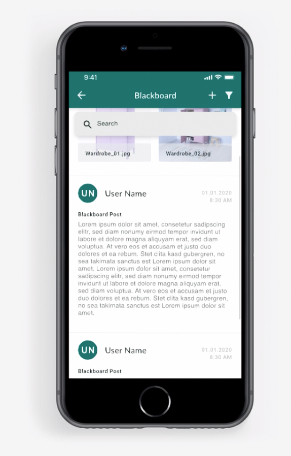
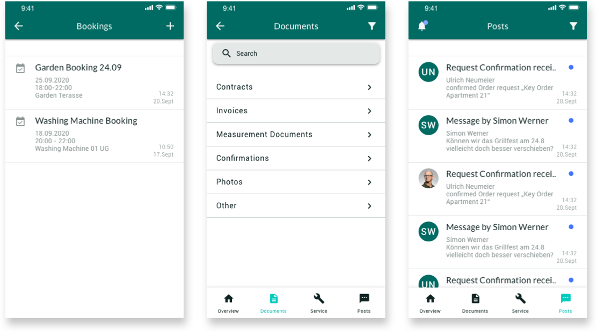
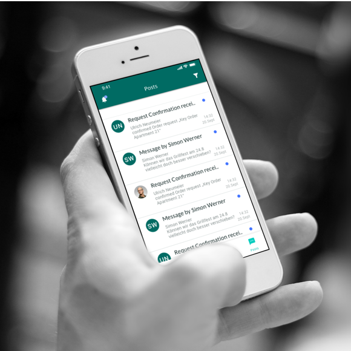

Selected Work
| Project | Casavi Customer Application |
| Role | Responsible UX Designer |
| Date | 20.10.2020 |
| Description | Redesign of the Casavi Customer Application provides a plattform for handling property specific tickets and documents. |

The Casavi Tenant App enables tenants and property owners to handle maintenance tickets, documents and other services belonging to house communities. It serves as a connection point between property managers and the people in the house. Major features were already implemented but were in the need for a general redesign.



As a first step the existing architecture was discussed. It was possible to remove some unnecessary features and bundle others where expected.

A set of wireframes was developed with serves as basis for the later iterations. The team decided on a layout and distribution of functions.
The UI was designed to fit both Android and IOS devices as the user group was nearly evenly spread in in these systems. Elements are designed along material design guidelines.
As some components should be branded for customers we decided to go for an atomic design approach. This enables best flexibility within the design system.


Since December 2020 the app is availible in the App Store. With a total ammount of 200 downloads.
| Project | Research Project / Visually Impaired Grocery Shopping |
| Role | Designer & Project Lead |
| Date | 30.08.2020 |
| Description | In depth field research in the area of visually impaired grocery shopping. |
Individual grocery shopping is still frustrating and time demanding for visually impaired people. A lot of uncertainties are involved to this action, such as navigation to the market, finding specific products or reaching out for help to strangers. With this research we aimed to explore the possibilities of how to improve this process.


Due to the fact that the project happened while the Covid-19 lockdown the study had to be executed in a remote matter. A row of semi-structured interviews with visually impaired people as well as experts in the field were conducted.
Results showed that there is still a big need for optimization. Because of the fact that visually impaired persons make up a pretty tiny user group supermarkets often don’t adapt to that.

Two personas were constructed grounding on the study results. Describing each the visually impaired shopper and assistant.

Along the findings of the interviews we designed a user journey of how assistance could be provided in and before the shopping process.


We proposed a concept of seamless assistance requesting as a possible solution to a better future shopping experience. Central thought was to give non smarthone familiar users the option to request directly via a wearable device.
The Wearable is mainly controlled with the input of two buttons on the device as well as voice control for text input.
| Project | Elderly Social Assistant |
| Role | Project Lead |
| Date | 20.06.2019 |
| Description | In depth field research in the area of visually impaired grocery shopping. |

In an aging society it’s more important then ever to involve elderly people to our strongly digital society. This is not just important in the sense of an equal right to take part but rather a big factor influencing the mental and physical health of seniors. With bridge I designed a device that is specially tailored for those users. It not just provides a understandable interface but also a hardware that allows for stong physical feedback and interaction.
A central consideration of the concept was that this special use-case would demand a unique hardware to make it usable.


The hardware combines a tablet with ergonomic properties as well as an emergency button. A on-desk or wall-mounted adapter allow for multiple use scenarios.

Buttons are shaped in a task-specific matter to enable fast recogniation without the need for visual aid.
The interface is built by principles already known by its users, which are mostly adaped from the physical space.

A unique set of icons builds the main screen. Icons show activity via movement. This optimally tracks the attention of users.